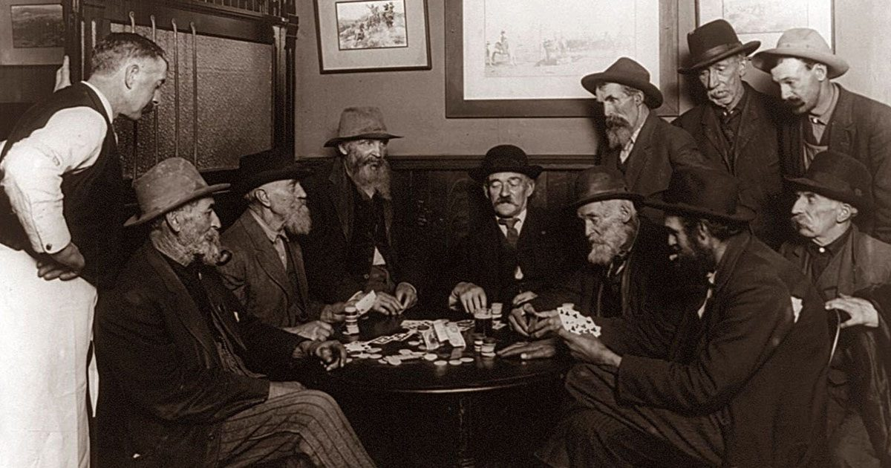

Poker was born in New Orleans, Louisiana, as a combination of the French card game Poque and a way to satisfy the gambling desires and pass time for passengers and crew on steamboats on the Ohio River. This era saw the first generation of “pro players”, a group of hustlers and cheats who would swindle the unsuspecting.
With the gold rush, Poker headed west, to the gambling saloons of Colorado mining towns and beyond, into California. Soon after, during WWII, poker became a go-to game for American servicemen who had easy access to military-issued decks of playing cards. When they came home, the Thursday Night Poker Game became an American institution, establishing the game in homes across the country.

Photo: Habwin
Texas Hold ‘Em and the Rise of Las Vegas
The 1940’s and 50’s brought the genesis of Texas Hold ‘Em and the Texas road gamblers. Legends like Doyle Brunson and Amarillo Slim traveled from town to town; by their recollection, “winning was the easy part, and getting out of town with money was the hard one.”
In the 60’s they migrated to the greatest game in town: Las Vegas. At that time barely more than a small refuge in a sprawling desert, Vegas had none of the glitz and glam found on today’s strip. In smokey old-west saloons, poker players won and lost fortunes---and sometimes their lives.
It was around this time that the World Series of Poker began at Binion’s Horseshoe casino, originally conceived of as just a gathering of poker die-hards where the winner was elected by vote at the end of it. It grew into a tournament, and when Amarillo Slim won the 1972 WSOP and went on Late Night TV shows, he became the first poker celebrity: an image of the iconic American cowboy gambler.
In the 1980s, things began to slow down for poker. Despite the success of prodigies like Stu Ungar, the poker scene in Vegas started to fade; Binions didn’t even have a poker card room except for during the WSOP. Nobody wanted to play, and the public perception towards poker players was that they were old geezers, degenerate gamblers, or both.
Poker’s Boom Years
That all changed with the advent of televised poker. While the first broadcasts of the WSOP were flops, the invention that truly changed the game was the hole cam. People could see the action for themselves, get to play the armchair quarterback, and then take it one step further than with regular pro sports: they could buy into the next tournament and play with the big dogs.
Then came Chris Moneymaker’s big win in 2003. Dubbed "The Moneymaker Effect" poker’s popularity surged as people became enchanted by the idea of a regular joe accountant from Tennessee becoming a millionaire overnight.
At the same time, poker was experiencing a sonic boom from the advent of internet poker. People could stay home, log onto their computer, and instantly play poker: no need to get on a plane, pay for a hotel, or tip the dealer. It was convenient and private, and a new generation of internet pros was born. Online poker revenues grew from $82.7m in 2001 to $2.4b USD in 2005. This growth, however, was cut short by the Unlawful Internet Gambling Enforcement Act of 2006 which was eventually followed up by "Black Friday" in 2011, both of which made online poker much more risky or even downright impossible in the US.
That doesn’t mean, however, that online poker died. There’s still plenty of ways to play online, especially with play money options. Live poker also continues to thrive—in Vegas, across America, and throughout the world.
Poker isn’t going anywhere as long as there’s somebody out there chasing the action!